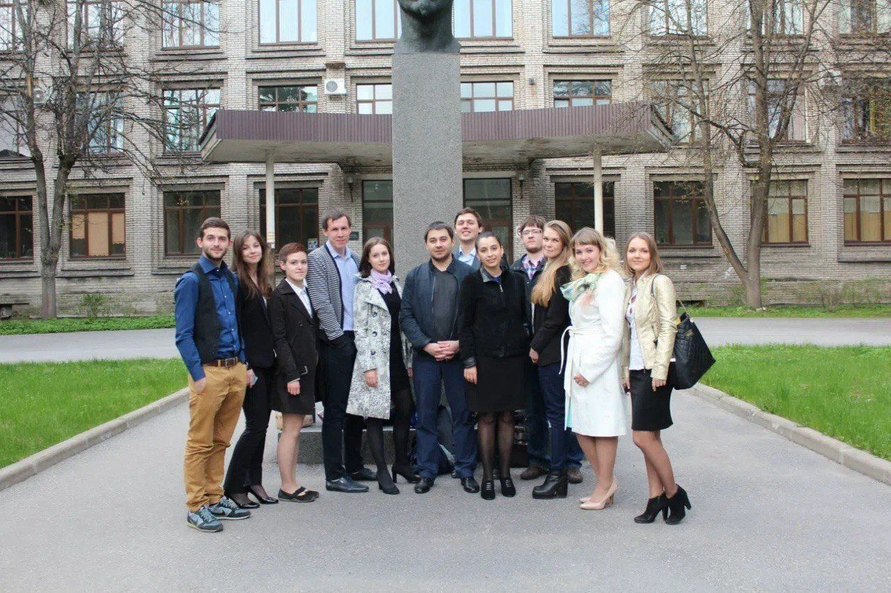
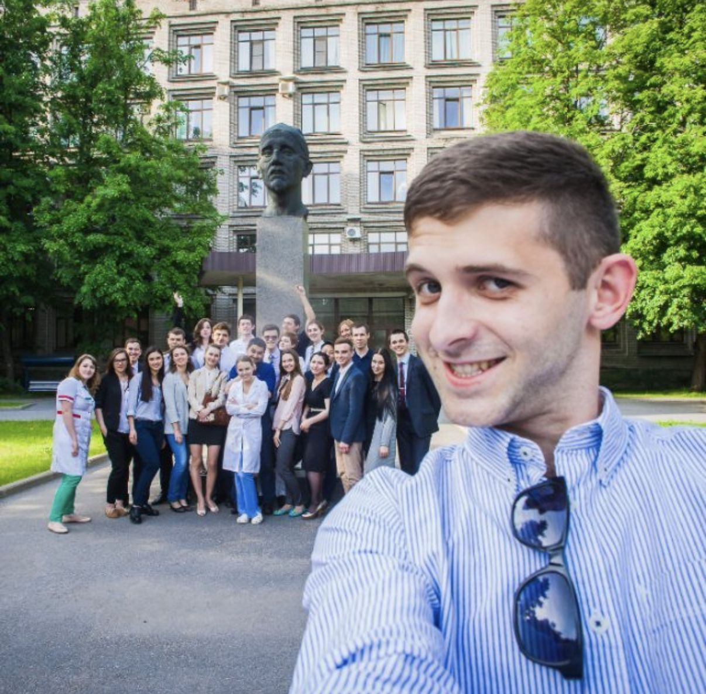
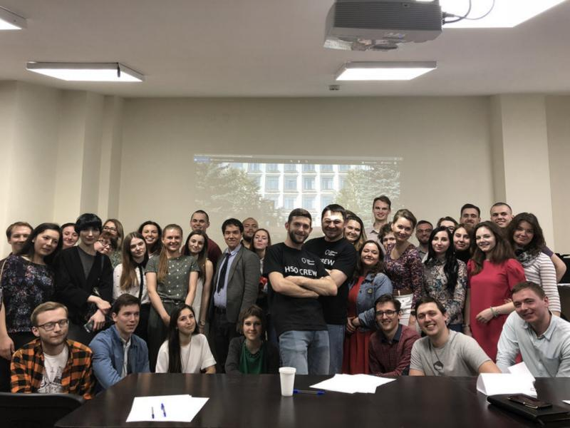

The situation
The Cancer Prevention Foundation in St Petersburg was small then, and short of money. An insurance company came to us with an offer: let's do something large-scale in breast cancer. The budget was about $3,000.
Spread across a city, that buys a few posters and a screening day nobody remembers. The money was a drop in the ocean for a crowd. But for one person it was a lot: enough to change where a young doctor's career goes.
The fork
Russia did not lack breast cancer awareness campaigns. It lacked good oncologists. One well-trained doctor treats thousands of patients over a career, so the same money went much further this way. The competition mattered as much as the grant: it made the selection public, so the best graduates would come to us.
What shipped
It did not even have a name in the first year: just a competition for residency grants. An open call for final-year medical students and graduates, with selection on medical knowledge, English and motivation. At first the project was the founder and me, so the competition was mine end to end: the idea, the advertising, every conversation with candidates and the selection itself.
In practice that meant a simple landing page, ads on VKontakte to reach graduates who had never heard of us, and selection in stages: an online application, then tasks that test clinical thinking and cannot be looked up (the founder helped write those), then an in-person exam at the institute.
What happened
There were far more applications than we expected, and too many strong people to pick two. The director of the institute and the sponsor found more money, and the first intake took ten. Then a US-based surgical oncologist joined to teach them, and the competition became a two-year programme alongside residency: the Higher School of Oncology.


95% of graduates work in public hospitals, and each sees about 500 patients a year. Two have made Forbes Russia's 30 Under 30: Polina Shilo in 2020, who now runs the programme, and Rostislav Pavlov in 2021. It became the foundation's largest programme.

Measured, not just counted
The programme was studied and published in JCO Global Oncology in 2021. Residents' evidence-based medicine scores on the Fresno test rose from a median of 68 to 111. On patient communication scenarios they scored 71 and 78, against 15 and 22 for physicians outside the programme. In 2025 an abstract on its first decade was published in the ASCO Annual Meeting proceedings.
The second country
In 2023 the model moved to Kazakhstan as IPSM.KZ, and I carried it over as a product: the website, the entrance test, candidate selection and advertising. It was working within two months and is still running, with more than 800 applications in its first three years.
Sources
- Baron E, Sittig M, Kotov M, Fomintsev I, Gushchin V. JCO Global Oncology, 2021;7:353-360: Fresno test 68 → 111, communication scores against non-participants, 250–830 applicants a year. I am not an author.
- Journal of Clinical Oncology, 2025;43(16_suppl):e21028, ASCO abstract: the programme ten years on.
- Nuzhna Pomosh, "A system against cancer", 2023 RU: first intake of ten in 2015, about one in a hundred oncologists in Russia, where graduates work.
- Ne Naprasno foundation news, 2021 RU: graduates Polina Shilo (2020) and Rostislav Pavlov (2021) in Forbes 30 Under 30.
- Programme page, Ne Naprasno foundation RU: 108 graduates since 2015, 95% in public hospitals, about 500 patients a year each, Forbes 30 Under 30.
- Cancer Prevention Foundation, Wikipedia: the programme, its three-stage selection, 38 applications per place in 2017.
- Profilaktika Media, 25 May 2018 RU: fourth intake, 11 grants out of 315 applicants; the 2018 photo.
- Takie Dela, 21 March 2018 RU: the fourth competition.
- ASI, 6 June 2025 RU: the eleventh intake.
- EA Charity, on the launch of IPSM.KZ RU: launch in June 2023, 800+ applications in 2023–2025.
Money is in US dollars: the sponsor’s budget was 200,000 ₽, converted at the 2015 rate.